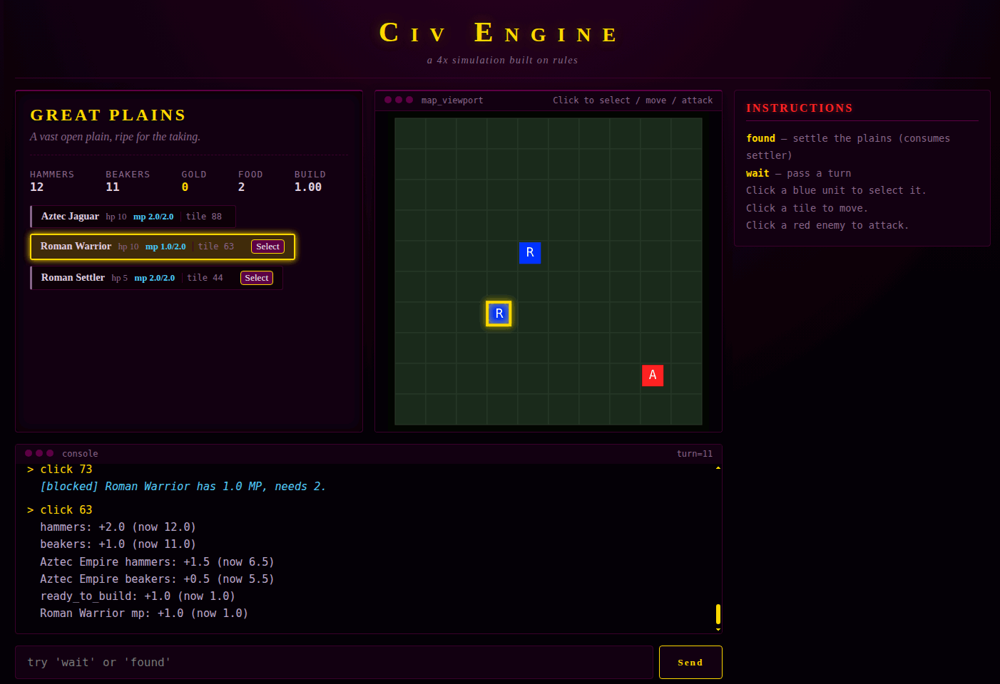

A deterministic, rule-driven simulation kernel for turn-based and real-time strategy games. The engine itself knows nothing about units, cities, or combat — it knows about entities, rules, events, actions, and transactions. Everything above that is data.
Glop is designed for games where the simulation must be:

Glop is a simulation kernel, not a game framework. It provides:
Everything else (units, cities, terrain, combat, economies) is content. The same engine can host a dungeon crawler, a 4X game, a roguelike, or a puzzle, because none of those nouns appear anywhere in engine.py.
An entity is a dictionary with a stable id and the following shape:
{
"id": "unit_rome_warrior_1",
"kind": "unit",
"name": "Roman Warrior",
"tags": ["military", "melee", "roman"],
"loc": { "container": "plains_1", "pos": { "tile": 15 } },
"stats": { "hp": 10, "hp_max": 10, "mp": 2.0, "mp_max": 2.0 },
"rates": { "hammers": 0.0 },
"status": [],
"rules": []
}
| Field | Required | Meaning |
|---|---|---|
| id | yes | Unique string key in engine.ents. |
| kind | no | Coarse classifier: unit, city, player, environment. Host-defined. |
| name | no | Display name. Defaults to id if absent. |
| tags | no | List of strings used for queries and by the condition language. |
| loc | no | container and pos, where pos is a dict of numeric axes (tile, x, y). |
| stats | no | Numeric fields. Written by modify_stat, read by conditions. |
| rates | no | Per-tick continuous contributions to stats. |
| status | no | Active timed effects. Managed by apply_status. |
| rules | no | List of trigger, condition, action dicts. |
The engine does not enforce a schema. If a field is absent, defaults are supplied on load (rates = {}, status = [], stats = {}, rules = []).
Three layers of numeric state:
Rates and statuses are how you express accumulate over time without scheduling an event per tick. Use scheduled events for one-shot transitions (production complete, cooldown ready), and rates for continuous quantities (gold per second, MP regen, starvation).
A rule is a triple:
{
"trigger": "production_complete",
"condition": "target == self and stats.hammers >= 10",
"action": { "type": "spawn", "ent": { } }
}
Rules are indexed by trigger. Adding or removing a rule on an entity updates the index incrementally; the index can be rebuilt from scratch with engine._rebuild_index() if it ever drifts.
An event is a named string (tick, attack, found_city, production_complete, or anything the content defines). Events are dispatched by three sources:
Every entity with a rule whose trigger matches the dispatched event name is visited, its condition is evaluated, and its action is staged if true. Conditions are evaluated against live state at dispatch time, but actions do not run until commit. This is the most important semantic in the engine.
An action is a dict with a type field. The engine ships with ten:
See Action Reference for fields and validation.
Every call to integrate(dt) creates a Transaction. The transaction:
The journal is also the projection surface for the Shadow module. The shadow consumes the ordered journal and emits semantic events and render hints without ever touching the engine internals.
The scheduler is a heap of (at, seq, event, target, context) tuples. Every tick, after advancing world_time, the engine pops all entries with at <= world_time and dispatches each as an event. Entries whose target no longer exists are silently dropped.
schedule(in=1.0, event=production_complete, target=city_rome) means one world-second from now, fire production_complete on city_rome. The context dict carried in the schedule entry is passed through to the dispatched rules as the event context, which is how cross-faction guards like target == self are expressed.
engine.integrate(dt) proceeds in seven phases. Understanding the order is essential to writing correct rules.
For every entity, every nonzero rate is added to the corresponding stat as stat += rate * dt, and the change is journaled. This happens before any event dispatch, so a rate is always applied before the tick rules see the stat.
world_time is set to world_time + dt and journaled.
The engine pops scheduler entries whose at <= world_time and dispatches each as an event. Dispatch visits every entity with a rule on that trigger, evaluates its condition against live state, and stages its action if true.
Staged actions do not run yet. They sit in txn.pending until commit. This means all scheduled events in a tick dispatch against the same pre-commit state — a rule fired by one scheduled event does not see the side effects of another scheduled event rules. This is why the condition language needs explicit existence checks (distance(id) < 99 for exists, distance(id) > 99 for absent) rather than reading a just spawned flag — those flags would not be visible during dispatch.
Active statuses have their duration decremented by dt. Any status whose duration is <= 0 is removed, and its rate (if any) is subtracted from engine.rates so it no longer contributes to the next tick.
tick is dispatched with context {dt: dt}. This is where most per-tick logic lives: regen, auto-combat, death checks, and per-tick state machines. Conditions see the fully rate-applied, time-advanced state, but no staged actions from phases 3 or 5 have been applied yet.
Any entries in engine._input_queue are dispatched in order. Each entry is {event: name, source: source_id, actor: actor_id, data: { }} and the engine merges data into the event context. This is the path the host uses to deliver player inputs, and it is the last point before commit at which new actions can be staged.
txn.pending is sorted by (priority, seq) — priority defaults to 50, and seq is assigned at staging time — and each action is applied in order via _apply_action. This is the only phase in which actions have their side effects.
If any phase raises, the transaction rolls back and integrate re-raises. The exception types are:
| Phase | Dispatch? | Apply? | Sees rate change? | Sees previous dispatch s actions? |
|---|---|---|---|---|
| 1 Rates | — | writes stats | — | — |
| 2 Time | — | sets world_time | yes | — |
| 3 Scheduler | yes | stages only | yes | no |
| 4 Status | — | removes/restores rates | yes | — |
| 5 Tick | yes | stages only | yes | no |
| 6 Inputs | yes | stages only | yes | no |
| 7 Commit | — | applies everything | yes | yes (within seq order) |
The takeaway: within a tick, conditions always see the pre-commit state. Across ticks, they see everything from the previous commit.
Conditions are Python expressions parsed with ast.parse(..., mode='eval') and evaluated by Engine.eval_ast. Supported constructs:
not is not supported. Use != to express negation: target != self means target is not self. id != 0 means id exists.
Any other function call returns float('inf')
| Intent | Expression |
|---|---|
| Entity exists | distance( |
| Entity absent | distance( |
| Enemy is adjacent | distance( |
| Is this me? | target == self |
| Is this NOT me? | target != self |
| Stat below threshold | stats.hp < stats.hp_max |
If you need a condition the language cannot express, the correct response is a new entity, a new stat, or a new small action — not a larger expression.
All actions are dicts with a type and, depending on the type, required fields. Validation runs at stage time via _validate_action, so a malformed action fails the tick before any of its side effects commit.
Add value to stat on target. value must be numeric.
{ "type": "modify_stat", "target": "self", "stat": "mp", "value": "-1" }
Step source positional axis toward target by up to speed.
{ "type": "move_toward", "target": "unit_rome_warrior_1", "speed": 1 }
Set target tile axis to tile.
{ "type": "move_to", "target": "self", "tile": 15 }
Add a timed effect with an id, duration, and optional rate.
{ "type": "apply_status", "target": "self", "status_id": "poison",
"duration": 5.0, "rate": { "hp": -1.0 } }
Modify target continuous rates by a dict of deltas.
{ "type": "add_rate", "target": "self", "rate": { "hammers": 1.0 } }
Queue an event at world_time + in for target, carrying context.
{ "type": "schedule", "in": 1.0, "event": "production_complete",
"target": "city_rome_city", "context": { "target": "city_rome_city" } }
The context dict is preserved through dispatch and is how cross-faction guards like target == self are expressed. If you schedule an event whose rules use target == self, you must set context.target to the recipient id. Otherwise target will be None and the guard will silently fail.
Remove target from the engine.
{ "type": "destroy", "target": "self" }
Create a new entity from an inline template. If the template id is already present, the spawn is skipped (logged, not raised).
{ "type": "spawn", "ent": { "id": "...", "kind": "unit", ... } }
Move target to a different container. Maintains the container index.
{ "type": "move_container", "target": "self", "container": "forest_1" }
Immediately dispatch another event with a nested context. Depth is limited by MAX_EMIT_DEPTH (8).
{ "type": "emit", "event": "build_phase", "target": "self" }
Caveat: emit does not merge action.target into the dispatched context. If the emitted event rules use target, pass it through context (which the action supports but which is rarely used). In practice, direct modify_stat on a literal entity id is preferred over emit for tick-based logic, because it avoids this footgun entirely.
Shadow is a read-only projection over the engine transaction journal. It does not mutate the engine and does not require the engine to know anything about rendering.
from shadow import Shadow
shadow = Shadow(engine)
txn = engine.integrate(1.0)
shadow.consume(txn)
for ev in shadow.frame_events():
# ENTITY_SPAWNED, ENTITY_MOVED, ENTITY_DAMAGED, ENTITY_HEALED,
# ENTITY_DIED, STAT_CHANGED, STATUS_APPLIED, STATUS_EXPIRED,
# CONTAINER_CHANGED, SCHEDULER_UPDATED, TICK_ADVANCED
...
for hint in shadow.render_hints():
# damage_flash, floating_damage_number, spawn_effect,
# death_effect, sound_cue
...
text_lines = shadow.narrative(perspective="rome")
Three principles govern the shadow:
The narrative(perspective) method is a human-readable filter over the frame events. It is used by the harness to produce the text log and is not required by any renderer. It skips movement and scheduler churn to reduce noise.
Engine.save(store) serializes the entire engine state — entities, containers, world time, and the scheduler heap — into a GameStore (SQLite by default). Engine.load(store) reconstructs an engine from that snapshot, including the rule index and container index, without re-parsing ents.json or containers.json.
Because the scheduler is part of the snapshot, a save mid-build resumes the build on load. This is why the engine has no turn counter separate from world_time — the world time is the turn counter, and it is saved.
The store interface is three methods (exists, save, load). Any storage that can round-trip a dict of engine state can be swapped in.
The engine is transport-agnostic. The canonical pattern is:
The engine ships with a minimal InputBridge that validates source and actor against a configured set of allowed sources and dispatches the input on the engine behalf. It is intentionally thin; most hosts will either use it directly or bypass it and call engine._input_queue.append with the same payload shape:
engine._input_queue.append({
"event": "attack",
"source": "rome",
"actor": "unit_rome_warrior_1",
"data": {"target": "city_tenochtitlan_city"},
})
The payload shape is part of the engine public contract. The engine merges {source: ..., actor: ..., **data} into the event context before dispatch, so an action condition can reference target (from data) directly.
The repository ships with one example game under games/dungeon_crawler/. It is a minimal playable 4X skirmish used to exercise the engine features:
The example is not a template. It is a fixture — its purpose is to prove that the engine can host a complete, winnable session with no engine changes. Anything in games/dungeon_crawler/ (including the Flask web harness and the 2D canvas renderer) is optional and can be replaced without touching engine.py.
To run it:
pip install flask
python games/dungeon_crawler/main.py
# open http://127.0.0.1:5000
See games/dungeon_crawler/README.md for commands and mechanics.
These are deliberate choices, not oversights. Changing any of them is a significant engine change, not a bug fix.
There is no action that sets a stat to an absolute value. Set to zero is expressed as a large negative modify_stat, and set to max is expressed as a guarded modify_stat that never overshoots because its condition checks stat < max. This is intentional: absolute sets are easy to misuse and hard to roll back meaningfully. If you find yourself needing one, the correct fix is usually a new stat or a different guard.
Stats can go negative or exceed their nominal maxima. There is no generic clamp. Content is responsible for bounding its own values through guards (stats.hp > 0 before damage, stats.mp < stats.mp_max before regen). Clamping would make the tick journal inconsistent with what the rules observe at dispatch time.
Conditions see pre-commit state. This is the trade-off that makes the scheduler fan-out behavior observable: if two scheduled events fire in the same tick, neither sees the other spawned entities. Content that needs cross-event coordination must use existence checks and per-tick state machines rather than shared flags. See The Tick.
Negation is expressed by != on entities (target != self) and by choosing the complementary comparison (distance(id) > 99 for absent). This is a deliberate limitation of the condition parser; adding not would require a proper boolean parser and would invite complex nested expressions that are hard to debug.
The engine does not generate unique ids. The spawn action skips if the id already exists. Content that needs repeated spawns must pre-register a pool of ids (e.g., warrior_1, warrior_2, warrior_3) and spawn them in order, or extend the engine with an id-sequence stat (a significant change).
A rule has one action. Multi-step behaviors are expressed as multiple rules with the same trigger and condition. They are staged in rule-list order and committed in (priority, seq) order, so they behave as a sequence — but each sees the pre-commit state of the others stats.
The condition language reads context only via bare name fallback. You cannot write context.target — use target, which will resolve to context["target"] if it is present, or source_ent.stats.get("target", 0.0) if it is not.
If you outgrow the engine primitives, here are the extensions that retain its design:
Each of these is a small, localized addition. None requires a redesign. The engine shape — journal, transaction, scheduler, dispatch — is stable, and the extensions compose with it rather than replacing it.
dev/glop/
├── engine.py # the simulation kernel
├── input_bridge.py # optional input validation/dispatch helper
├── persistence.py # GameStore (SQLite snapshot)
├── shadow.py # read-only projection over the journal
├── README.md # this file
├── assets/
│ └── glop-splash.gif # splash image (upload separately)
└── games/
└── dungeon_crawler/ # minimal test game
├── README.md
├── main.py # Flask web harness
├── ents.json # content: factions, cities, units, clock
├── containers.json # content: containers and their bounds
├── test_shadow.py # data/engine invariant smoke test
└── templates/
├── index.html
├── style.css
└── 2drender.js
The engine has no imports from any game. Every game imports the engine. Any file inside games/ can be deleted and the engine still runs.